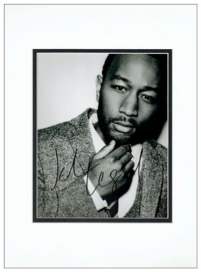
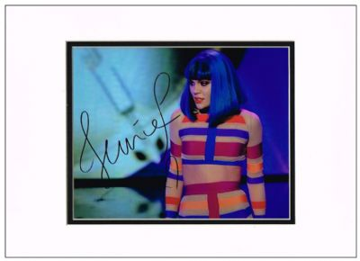
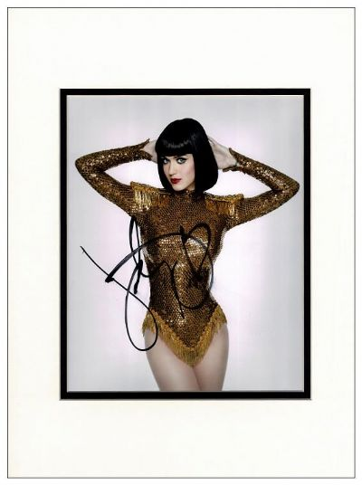

This site is a place for all the autograph collectors who want to talk with other people who have the same passion as they do. They can talk, sell, buy and exchange any autograph they want.
The exchange rate
Each autograph is from a specific category. The rating exchange shows how many autographs of a certain type or what autograph from a certain persoality the collector is willig to trade for.
Music category:

John Legend:
Genuine black ink autograph of American singer-songwriter John Legend on a black and white photo. Signature obtained at the Sundance Film Festival, Utah in January 2017. Signed photo measures 10 x 8 inches. Double mounted in cream and black to an overall size of 16 x 12 inches.
Willing to trade for: nothing.
Price: 62.37€.

Jessie J:
Black marker pen autograph of popular English singer-songwriter Jessie J on a superb colour photo. Double mounted in cream and black to an overall size of 16 x 12 inches. Signed photo can be safely removed from the mount if required.
Willing to trade for: nothing.
Price: 51.03€.

Katy Perry:
Black marker pen autograph of American singer Katy Perry who has sold more than 100 million records to date. Photo measures 10 x 8 inches. Double mounted in cream and black to an overall size of 16 x 12 inches.